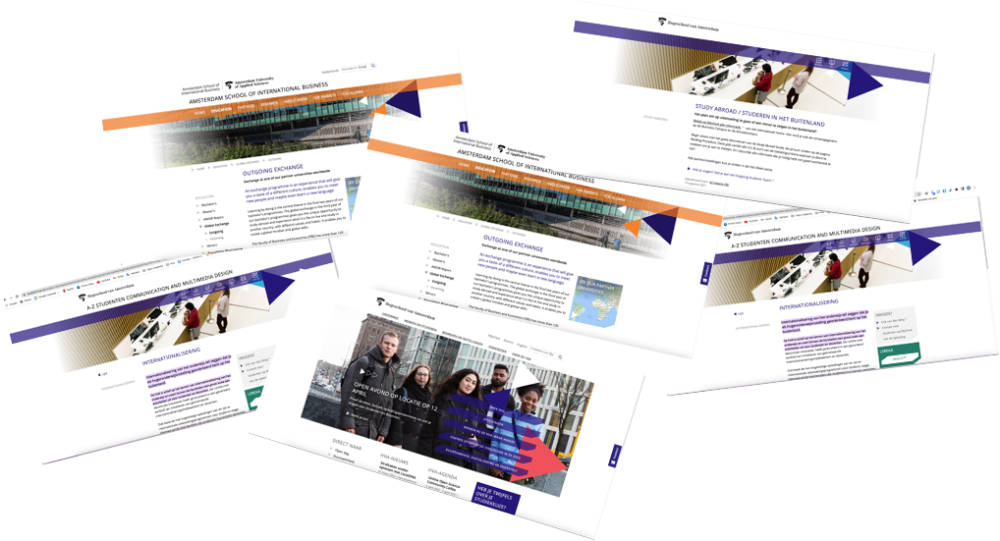
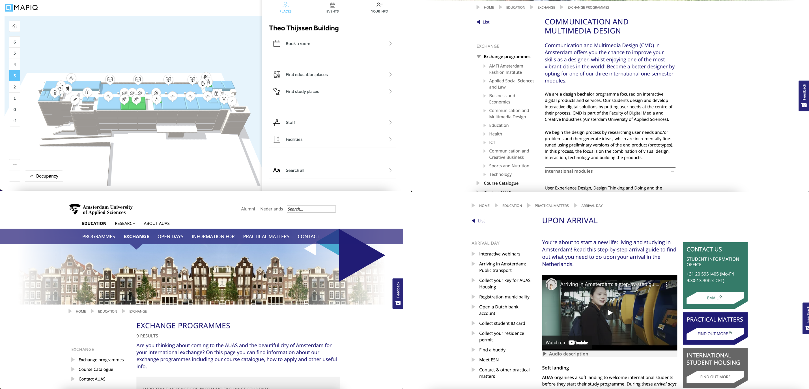
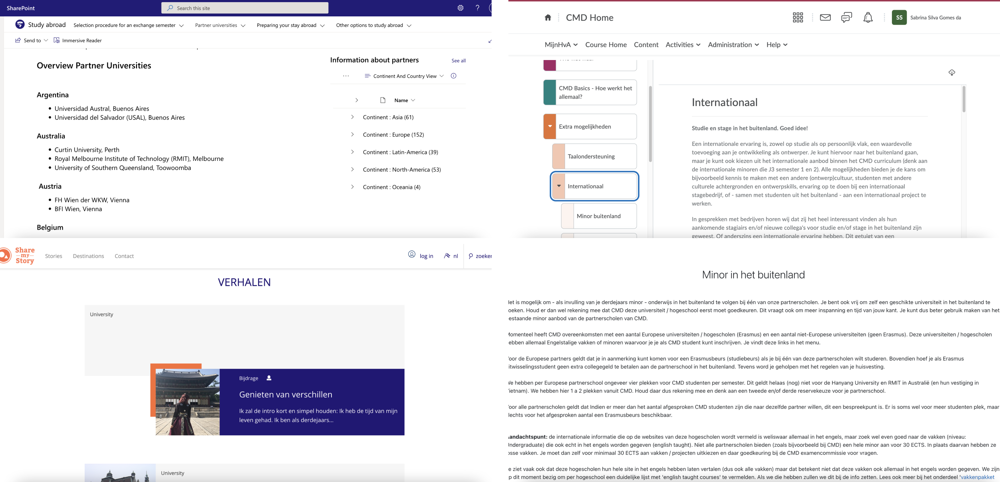
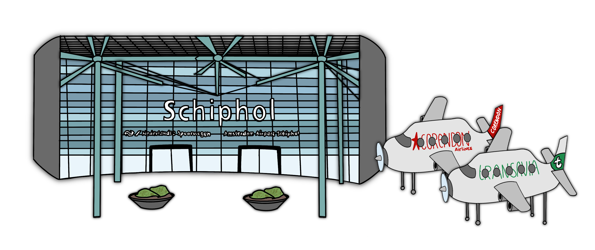
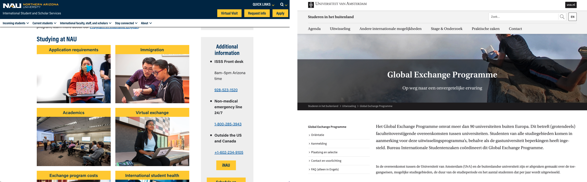
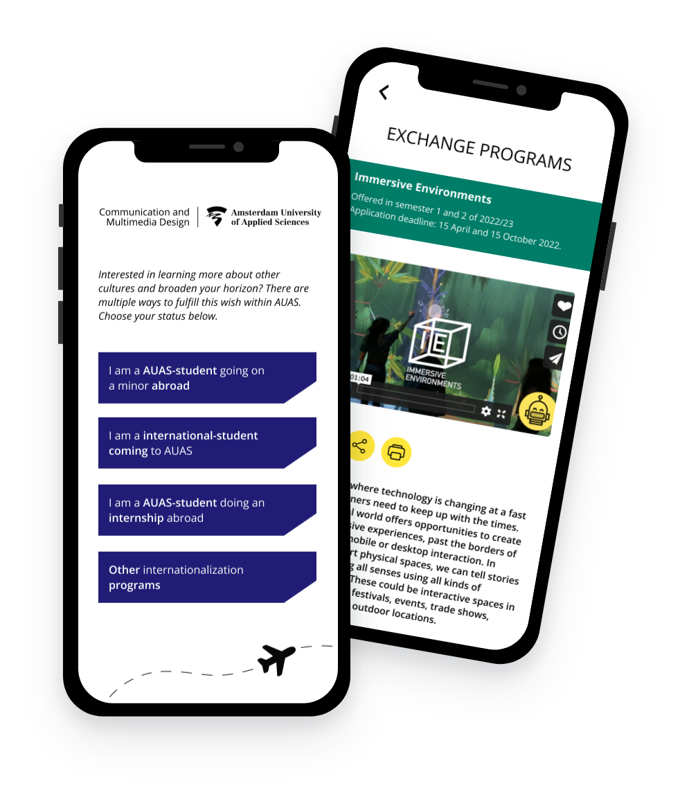
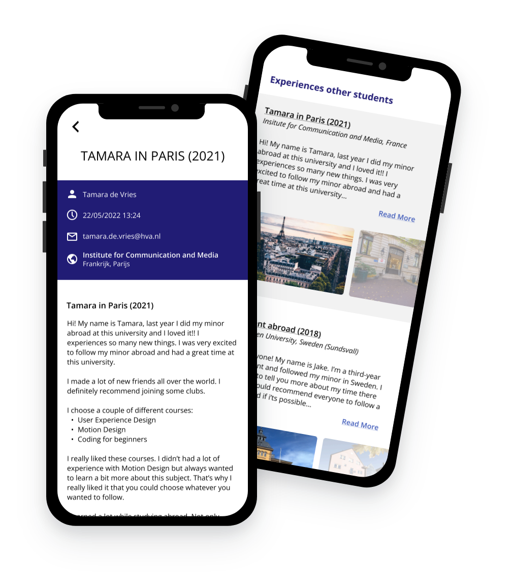
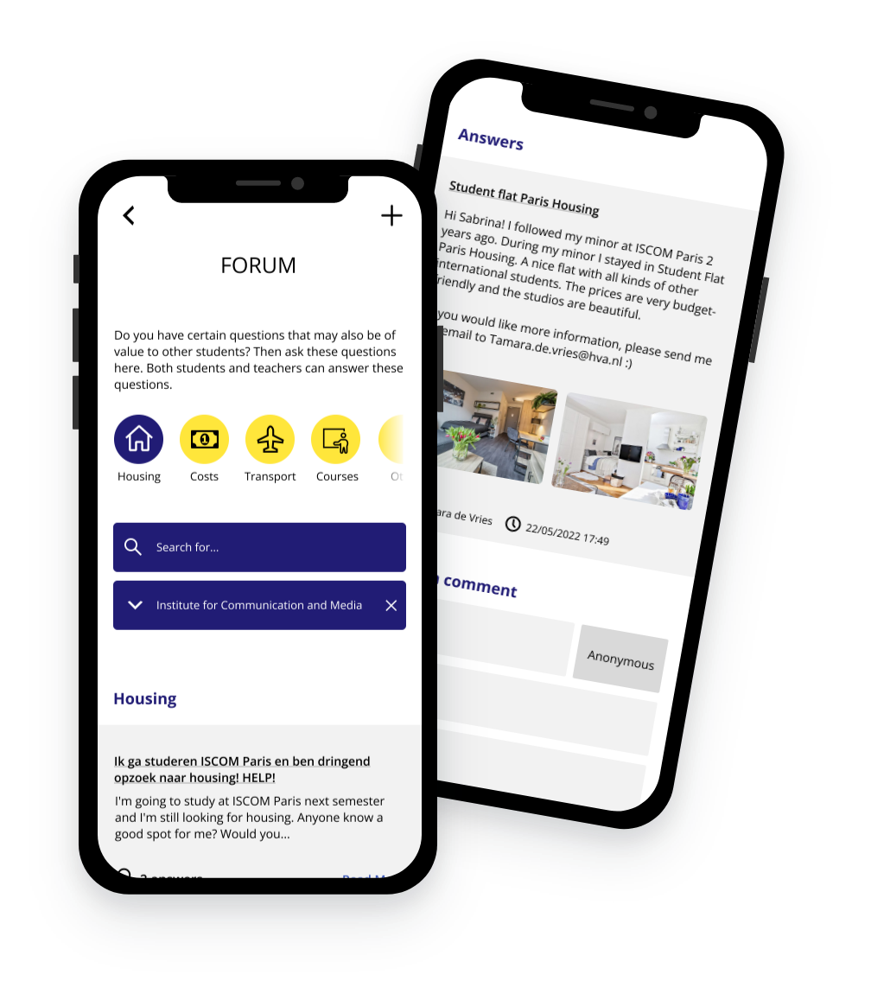

Projects
Project: Exchange Program Platform
Focus: UX/UI/Visual Design
“How can we create a digital, interactive product, to help incoming and outgoing exchange students, receive the information they require, when wanting to follow a minor abroad?
Introduction
Many universities provide the possibility to complete a minor abroad. This also applies to the "Communication and Multimedia Design" curriculum at the Amsterdam University of Applied Sciences.
When you decide to pursue a minor abroad, there are a number of things to consider before embarking on your adventure. Consider administrative matters such as application to the program and immigration. Searching for housing and transportation options are equally essential. However, obtaining this information can be challenging. It may surprise you, but getting information regarding going abroad is difficult. There are numerous pages dedicated to going abroad or international students attending AUAS. Pages offering general information, student experiences, courses, and more. When students are unable to obtain information on a particular subject, they will contact the CMD International Office. [The International Office is now run by only one person, it’s almost impossible for her to respond to every message she receives.
Of course, the International Office will advise these students. However, if they are preoccupied with answering questions that can be found online, they will be unable to complete other important tasks such as connecting with new partner institutes, collecting experiences from exchange students, and so on. These time-relocated tasks are critical in attracting new exchange students.
I'll aim to solve this problem by merging existing information with the experiences of exchange students. I'm hoping that this may support future exchange students with a life-changing experience abroad.
The Problem
As an incoming or outgoing exchange student, you will go through a lot of changes in a short period of time. "Culture shock" is another term for it. You'll need as much information as possible to prepare for this adventure. The Amsterdam University of Applied Sciences has made this information accessible. Unfortunately, this information is scattered over the university's website and is difficult to locate. As a result, students are misinformed and miss critical information and data. Another consequence is that students learned too late about the charges that must be paid in order to receive assistance with things like housing. Because the students were unaware of these additional fees, they did not factor them in, putting them in a financial bind.
Students will send these questions to their program's International Office because they cannot find the information because it's fragmented and difficult to find on the website of AUAS. The International Office will provide the information (that is already provided by AUAS) in a logical way. As a result, the CMD International Office is constantly occupied with answering questions that can be found online, leaving the international office with less time to focus on other important tasks such as recruiting new partner institutes. Some students will decide not to take the chance of pursuing a minor abroad due to incomplete information and a scarcity of experiences from other students. These students are worried that the missing information will prevent them from going abroad, therefore they will pass up this opportunity. There are a lot of experiences from other exchange students. Experiences about partner institutes, courses, or the organization itself. These experiences and blog pages already exist, but there is no place for them to be shown.
Context
Current Solutions
Amsterdam University of Applied Sciences
For students interested in going on an exchange abroad or international students wanting to come to AUAS, there is a ton of information available. The information on the AUAS website is now scattered throughout numerous pages. This information is separated into information that is available to everyone and information that can only be accessed by logging in with your AUAS account.
Incoming exchange students
If you are an international student interested in attending AUAS, there is a lot of information available for you before you arrive in the Netherlands. There are several pages about coming to AUAS and what you should do before you arrive. But there are also different pages describing other students' experiences, the buildings, the facilities, and so on. The majority of these pages are not connected to one another, making them difficult to locate. Students can go to their own International Office (from their home country) for help if they can't find what they're looking for, and they'll send you to the International Office from AUAS. The International Office will then forward them to the appropriate person in charge of this activity.
Outgoing exchange students
If you are a Dutch student interested in going on an exchange program abroad, AUAS can assist you with this process. However, exactly like the pages for incoming students, everything on the AUAS website is scattered over multiple pages. Information can be found on a variety of websites, including the AUAS main website, DLO, and CMD Moodle.
Stakeholders
The students
Students wish to participate in the international exchange program. This creates dozens of questions. This concept will assist these students in obtaining the necessary information and help them be more at ease about their upcoming adventure. This concept will also assist students in not missing important deadlines and in learning more about going on exchange and the associated costs. I interviewed 2 students. One incoming student and one outgoing student.
The CMD International Office
Fewer students will ask questions to the International Office if the information is presented easily and efficiently. As a result, the International Office will have more time to focus on other important tasks such as establishing new partner institutes, launching new programs, and collecting experiences from other students (which can attract new students). This would be beneficial to the students as well. I interviewed the CMD International Office to get more insights.
The Amsterdam University of Applied Sciences
If students can easily obtain information and experiences from others, they will feel more comfortable, which will lead to more international students enrolling at AUAS. The bottom line is that we should promote AUAS and showcase its greatness via the experiences of others.
Target Audience
The target audience is (future) exchange students. Students on an exchange coming to AUAS, and Dutch students going on an exchange abroad.
These students seek information because enrolling in an exchange program is a large undertaking. Upon coming here or going abroad, there are several important tasks to fulfill. Important responsibilities include finding accommodation, applying for programs, and getting your VISA. But there are also essential things to consider, such as selecting the right university and courses. They want to learn more about the experiences of other exchange students and how they experienced pursuing a minor in another country. Exchange students can be students who find moving abroad for a longer amount of time challenging, as well as students with more experience. Both are dedicated students who want this adventure to be a success and a life-changing journey for them. All of these students will be connected by the theme of globalization. They desire to travel abroad, meet new people, and form friendships with people who share similar interests.
Research
Competitor analyses
Many universities offer an exchange program, which allows you to complete part of your curriculum whilst studying abroad. This program will be organized differently by each program from AUAS.
One of the partner institutes from AUAS is the Northern Arizona University in Arizona, the United States. Finding the exchange program page isn't easy, but if you do, you'll discover a great deal of information on this webpage. What they excel at is guiding you to all of the right pages. They don't have to update a lot of different pages because the website will just lead you to one or two pages instead of showcasing the information on every page itself. This can prevent missing content or conflicting information.
Another competitor is the University of Amsterdam, a Dutch university that also allows students to participate in part of their curriculum abroad. This university's website isn't as well-organized as it could be. When looking for something, such as partner institutes, you must browse through a variety of pages. The ability to see where you are on each page thanks to the "breadcrumbs" is something I believe would be a useful addition to this concept.
Interviews
Several interviews were conducted to learn more about the target group's desires.
First, I wanted to learn more about the Exchange Program and why finding information is so difficult. Lena Essing, the head of the CMD International Office, was interviewed. I gathered some valuable knowledge from this interview. Every AUAS International Office operates uniquely. Larger programs, such as Economics, will have a big team in charge of the Office, whereas CMD has only one person in charge of everything. As a result, there are too many tasks to accomplish in too little time.
Because of Covid-19, information on studying abroad was out of date. Every page needed to be completely redone with the new information. The details of going on an exchange had changed, and Lena was working hard to update everything. Lena received a lot of questions via email and Teams message as a result of the conflicting information. Now she not only had to update the content as soon as possible, but she also had to answer the same questions every day - from multiple students. Because of this, she had less time to accomplish other important and valuable tasks, such as finding new partner institutes and developing other internationalization programs.
"There is a lot of information about going on an exchange - but very fragmented throughout the AUAS/DLO pages."
I also wanted to get more information directly from the students. I spoke with Annelinde, an AUAS student who wanted to pursue a minor abroad. She addressed the consequences of missing important information in this interview. She intended to pursue a minor at a university that wasn't an AUAS partner. She had to formally apply to this university, but she missed the deadline due to a lack of knowledge from AUAS. If the information had been supplied earlier, Annelinde would have been pleased to add this university to be one of the partners from AUAS.
Next Carolin, a German student studying at AUAS for a semester, was interviewed. Carolin found the fact that there were so many pages on coming to AUAS and pursuing a minor at CMD to be quite confusing. She didn't find it very useful due to the contradictory information on each page. She also received contradicting housing information from AUAS, which resulted in additional expenses. Carolin would have preferred to receive the correct info ahead of time so she would know what to expect. This wasn't the only difficulty she faced. Carolin enrolled in the "Speculative Design" minor. Unfortunately, the minor was canceled due to a lack of enrolling students. Before enrolling in this program, she would like to learn more about programs being canceled or the certain ability of programs.
Vision
Design Challenge
“How can we create a digital, interactive product, to help incoming and outgoing exchange students, receive the information they require, when wanting to follow a minor abroad?
Future Scenario
There will be several positive results from creating and maintaining this concept. Students will have an easier time finding information and will feel more at ease about enrolling in the exchange program. Because of this, more students will enroll which is an excellent way to promote AUAS at the partner institutes. Because information is easily accessible, students will not send the International Office "standard" questions that can be found on the website of AUAS. As a result, the International Office has more time to focus on other important tasks, such as:
- Creating new initiatives to connect Dutch students with international students
- Connecting with new partner institutes
- More time for current exchange students to be guided throughout their journey
In the future, this website could also be used by other programs at AUAS. In this way, you could expand the forum and experiences of other exchange students.
Requirements List
There are a number of requirements for this application to be successful. Elements that the user wants to see in order to get the most out of their experience with it. These elements can be classified as "must haves," "should haves," and "could haves".
Must Haves
- Experiences from other students doing a minor abroad.
- Referrals to the right person for certain questions.
- FAQ where students find information quickly.
- General information about going on exchange.
- Information about conditions you must meet to go on an exchange.
Should Haves
- Video material about courses to make it more interactive for international students.
- Contact form to get in contact with the International Office.
- Information about the AUAS buildings.
- Information about the costs of doing an exchange abroad.
Could Haves
- 3D tour through the AUAS buildings.
- Option to get in contact with other exchange students. (experiences)
Concept Sketches
The first sketches were created after a lot of brainstorming. From there, I gathered more information regarding AUAS's political side. What you can read and what you can't see without signing into your AUAS account. This resulted in numerous iterations. A prototype was eventually created and tested with the intended target audience. The final deliverable was created with all of the iterations and material that had been tested in mind.
Prototype
The final concept is a platform where all information regarding internationalization can be found. Find out everything you need to know about following a minor abroad. Choose your internationalization status and read all the associated information. Learn more about the general information, partner institutes, exchange programs, and more. Check out the Roadmap to see what you need to do to study abroad and cross it off your list!
Are you curious about other students' perspectives on going abroad? Read more about other students' experiences, leave a comment, or ask a question. Add your personal experience as an exchange student, to help other students decide if they want to study abroad as well. You can either filter by partner institutes or read about all of them!
Are you looking for something specific? Check out the forum! Do you have a question that you can't seem to find an answer to? Look through the Forum to see what students and teachers have to say. Look through several categories such as housing, costs, transportation, and more. Choose a partner institute or browse through the general posts. Help another student by telling them more about your experiences with specific topics.
What information can be found throughout the website
Incoming exchange students can find all kind of information about:
- General information about coming to AUAS
- Information about the Minor Programs
- Frequently Asked Questions about following a minor at AUAS
- Tips from other exchange/Dutch students
- Experiences from other exchange students at AUAS
- A forum where you can ask and answer questions about exchange
- More information about the “Student Life” in Amsterdam
Outgoing exchange students can find all kind of information about:
- General information about following a minor abroad
- Information about the partner institutes from CMD
- Frequently Asked Questions about following a minor abroad
- A Roadmap about all the things you need to take care of before going abroad
- Experiences from other exchange students that studied abroad
- A forum where you can ask and answer questions about exchange
- The application forms and other documents you need to send
Flows
Going Abroad Flow
These are the pages for AUAS-students that want to follow a minor at one of the AUAS partner institutes. You can see how the students can browse through the mobile website.
Coming to AUAS Flow
These are the pages for international students that want to follow a minor at AUAS. You can see how the students can browse through the mobile website.
Conclusion
Throughout this project, I wanted to focus on how I could support exchange students in feeling more at ease when deciding to pursue a minor abroad. When you decide to take this big step and study abroad for a semester, there are a lot of things to consider before you leave. I'm also thinking about doing a minor abroad, which is why I'm so interested in this subject. The first sketches were inspired by my own struggles locating information about going abroad. I also had my first interview with the CMD International Office, where I acquired numerous insights that I used in the initial designs.
After interviewing (incoming and outgoing) exchange students, I gained more insights that developed the initial sketches into the first Hi-Fi iteration. I also re-interviewed the International Office to gather further input into my new iteration and see if any other features could be added to make it even more valuable to the target audience. I tested the prototype with two (future) exchange students, and they gave it a nod of approval. They're also interested in pursuing a minor abroad but haven't been able to find the necessary information. They discovered information about going abroad, that they weren't aware of by using my prototype. Throughout the test, I noticed a few areas of difficulty and immediately wrote these down. These were improvements or other additions that may improve the prototype and increase its value to them. And that's how iteration 2 was created.
With the research and interviews in mind, I think this prototype could be success. It could help the International Office having less tasks to answer “standard” questions and let them focus on more important tasks. Future exchange students have the opportunity to read about going on an exchange, read more about other experiences and decide if this is something that they want to pursue. With the research and interviews in mind, I believe this prototype has a good chance of becoming successful. It may be beneficial for the International Office to have fewer "standard" questions to answer, allowing them to focus on more important tasks. Future exchange students can learn more about going on an exchange and other activities to help them decide whether this is something they wish to do.